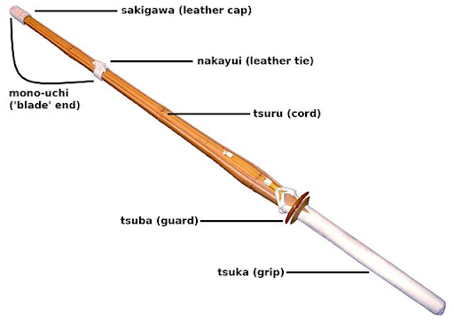
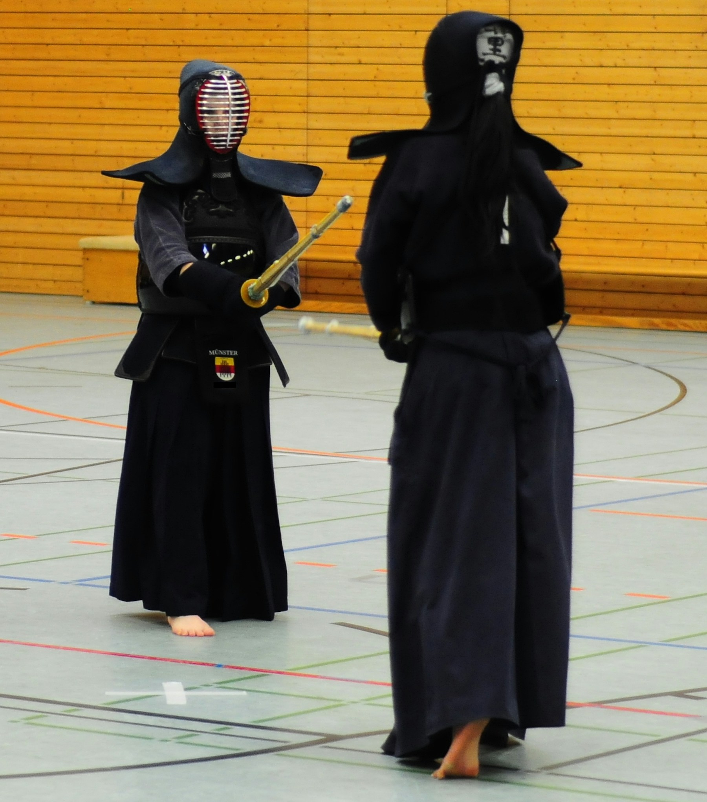
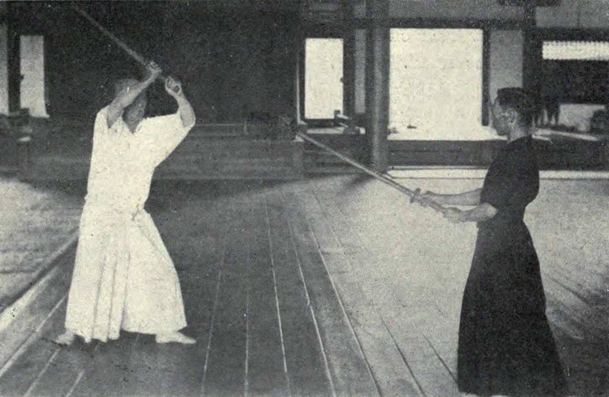
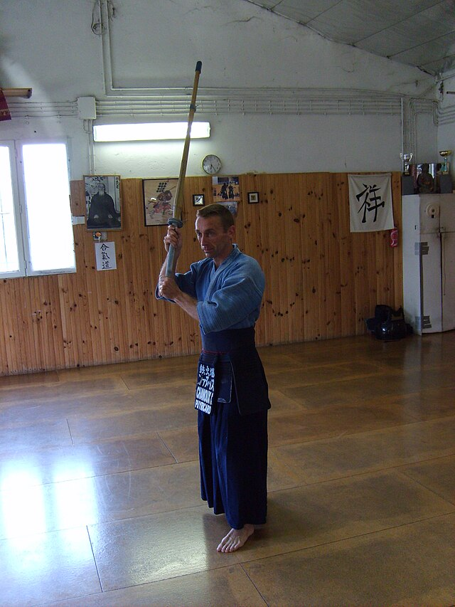
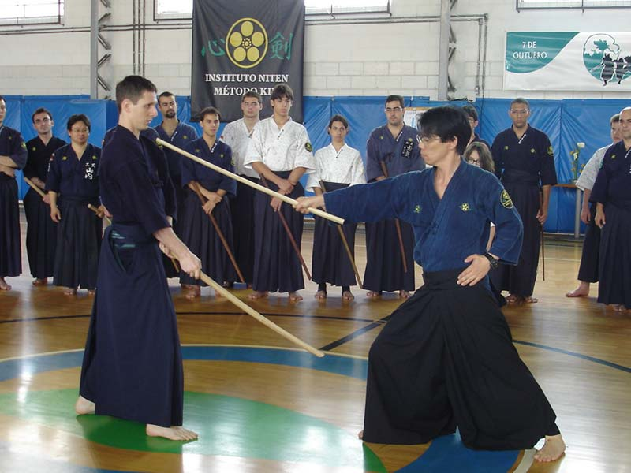

Cloth and leather worn around the waist to protect groin and upper legs
Has nametag (nafuda) attached in the middle
Bamboo sword (Shinai)

The bamboo swords used in kendo today are typically made of four dried bamboo slats that
are held together by the handle, a leather tie in the middle,and a fitting cap at the tip.
The matchcourt is a square with each side measuring 27 to 33 feet
Duration is five minutes with an extension of three minutes if tied
One chief refree (shushin) and two subordinate refrees (fukushin)
If the chief refree announces a point or stops the match, the clock is stopped
Red and white flags are used to signal decisions such as commencing the match, terminating the match, recognizing the winner, recognize illegal move, etc.
Rules (cont.)
Points are granted when strikes are made and the majority of refrees agree that the strike was valid
- A successful strike is called yuko datotsu and requires the contestant to strike an appropriate place on their opponent with full spirit and correct posture followed by zanshin. The blade must also be pointed in the proper direction for the strike to be valid.
A point is also made if the opponent falls or steps out of the court
If both contestants strike each other at the same time (aiuchi), no points are granted to either side.
There are two types of matches
- First to score a point (ippon shobu)
- First to two points (sanbon shobu)
Kata is a methodology to learn and perfect a pattern of a certain technique
The Dai Nippon butoku kai, in 1911, established a ten-form kata when kendo became a part of the school curriculum. This new conglomeration of kata from various kendo schools was called the Dai Nippon teikoku kendo kata
This version of kata was standardized in 1917 when it became more refined, with the text of kata being published in 1933. Following WWII, the name was shortened to Nihon kendo kata.
Nine Points of Kendo Kata
Refine your composure and mannerisms
Develop proper posture
Become aware of the thoughts and actions
Become agile
Lose undesirable technical habits
Understand the proper maai (distance)
Develop spirit and energy
Comprehend the principles of the katana
Cultivate grace, refiend character, and dignity
Forms
The ten forms of kata in kendo are broken into two parts. Seven techniques are for the long sword form (tachi no kata)
and three techniques are for the short form (kodachi no kata). The most important forms are the first three techniques
of the long sword form that teach honesty, benevolence, and courage and the third technique of the short sword form that teaches the value of life.
Training (keiko)
There are many ways of training in kendo:
repeat cutting practice (kirikaeshi keiko) is arguably
the most important practice that all kendo practitioners can do. It teaches posture, distance, spirit,
footwork, and other essential aspects of kendo. During this form of practice, the student repeatedly strikes
the receiver's shinai that is held close to their heads while both parties move back and forth.
striking practice (uchikomi keiko) is another popular form of practice that involves the student striking
an opening that the receiver shows to them.
tournament practice (shiai keiko) is a form of practice that is done before a tournament. This form
prepares the competitor to know their weaknesses and improve their skills. During tournament practice, the order
of competitors is also chosen.
Five Basic Stances (gogyō no kamae)
Middle Stance (chūdan no kamae)
Also known as the rank of water (mizu no kurai), this is the most useful stance in kendo.
It is used for both offense and defense, allowing one to quickly change into a different stance.
In this stance, the right foot is placed forward and the shinai is held in front, pointing upwards at the opponent’s face.

Five Basic Stances (gogyō no kamae)
Above Stance (jōdan no kamae)
Also known as the rank of fire (hi no kurai), this is an offensive stance in which one strikes down onto an opponent if an opening is found.
In this stance, the shinai is held above the head with both hands, ready to be brought down for a downwards strike.
Since the body is exposed during this stance, aggression and strength become important.

Five Basic Stances (gogyō no kamae)
Eight-faceted Stance (hassō no kamae)
Also known as the rank of wood (moku no kurai), this stance is a variation of the above stance.
In this stance, the sword is tilted to the back and to the right, rather than being raised over the head.
This stance was first used when the above stance was impossible due to one’s helmet or the condition of the environment.

Five Basic Stances (gogyō no kamae)
Lower Stance (gedan no kamae)
Also known as the rank of earth (tsuchi no kurai), this is a defensive stance.
In this stance, the sword is lowered to the level of the opponent's knee.
It is important to be flexible and aware during this stance to prepare for an attack.

Five Basic Stances (gogyō no kamae)
Hip Stance (waki gamae)
Also known as the rank of gold (kin no kurai), this is a variation of the lower stance.
This stance makes it so that the opponent is unable to see the entire sword, making it difficult for them to predict an attack.